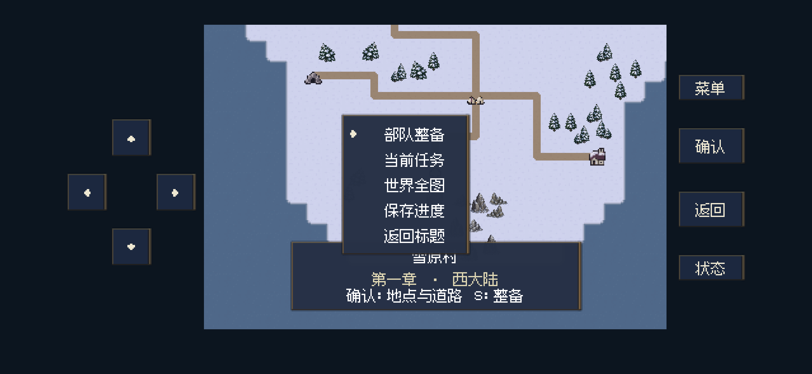
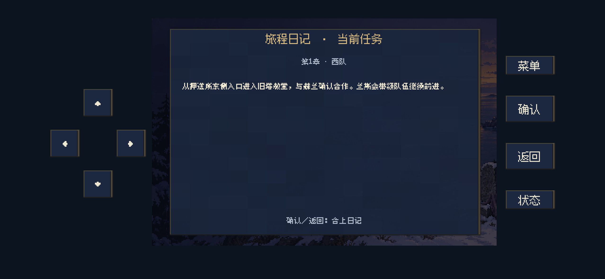
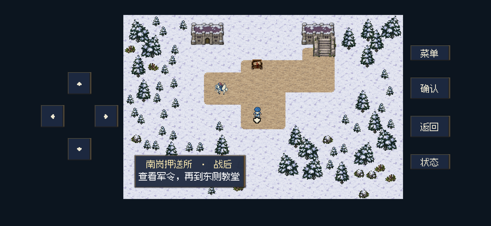
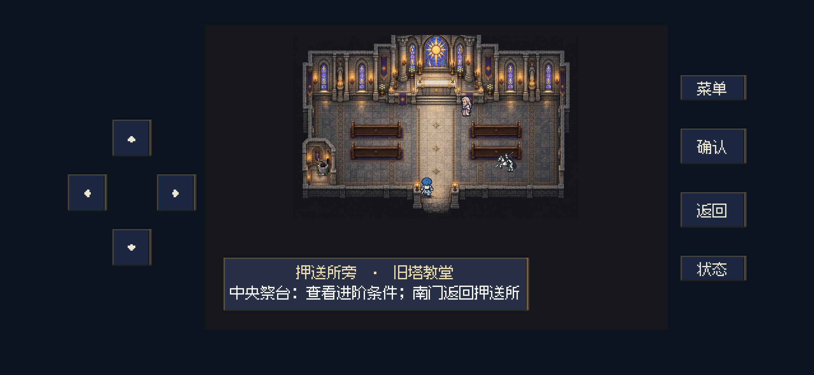
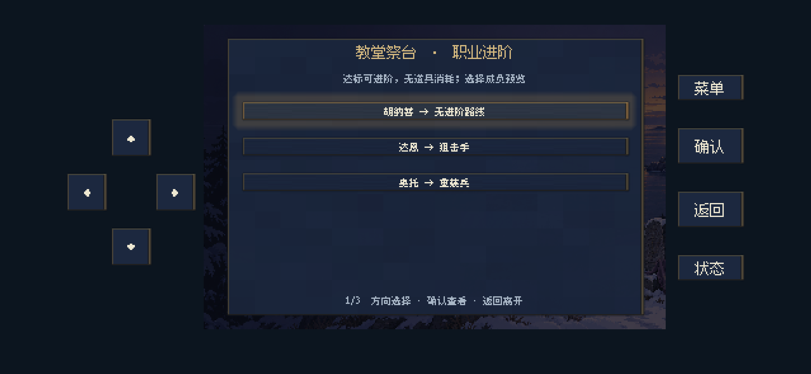
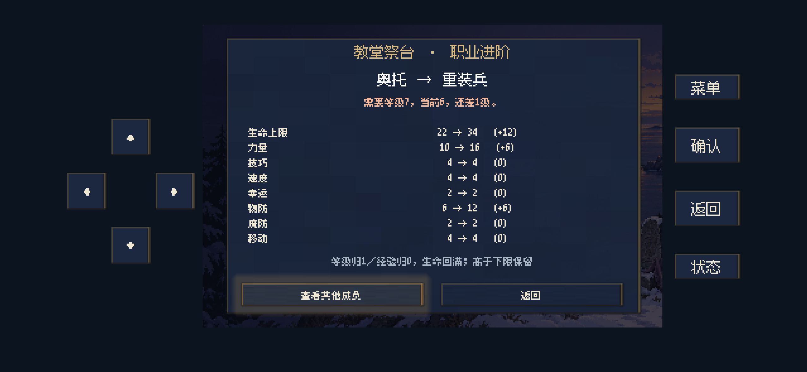
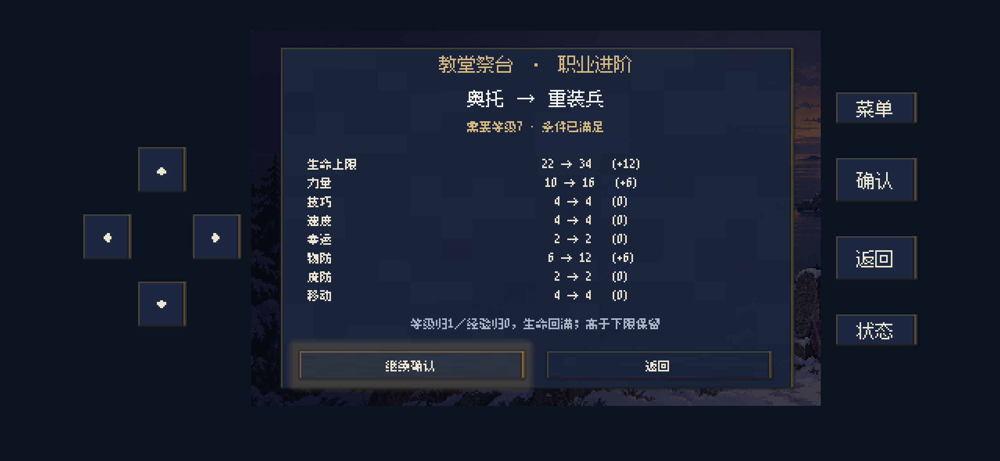
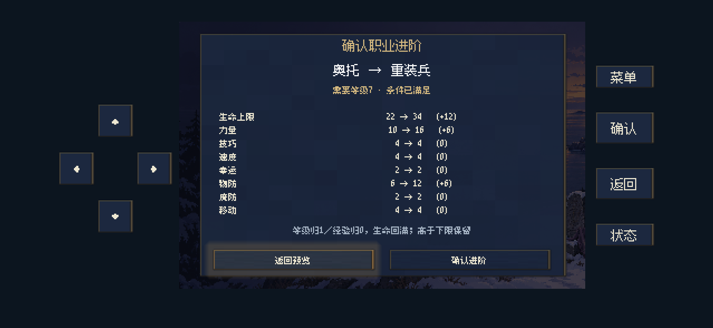
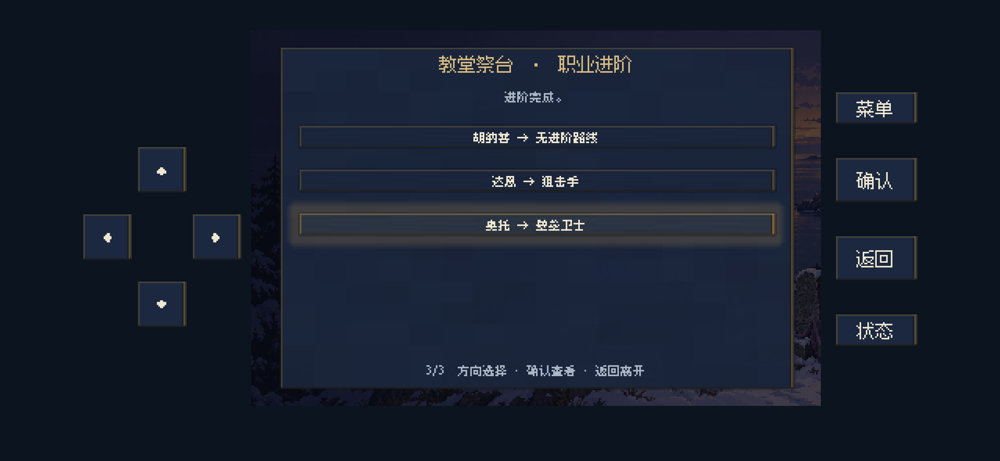
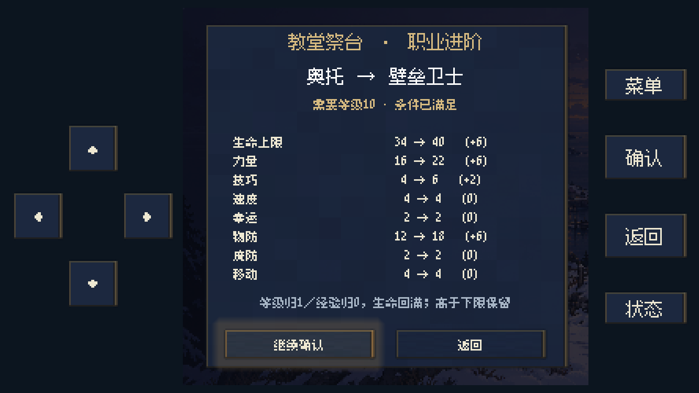

2026-10-30 · 修改、运行验证与数值说明。以下截图来自电脑上的 Godot 后台手机布局渲染，本次未更新 iPhone。
49项逻辑检查 · 59项后台检查通过大世界菜单在“部队整备”下方新增“当前任务”，以旅程日记呈现下一步。第一章明确识别分粮、取军令、教堂合作等道路门槛；后续章节根据当前队伍、战斗完成和交接状态更新提示，包括第四章需要切换东队取得观测步骤的情况。
蕾娜确实是天马骑士（职业3），已使用对应职业地图形象；招募后也按当前职业取图。兰斯是骑兵（职业1），显示骑乘形象。赫兰直接复用序章修长版素材，不再使用年轻通用人物。
旧塔教堂改为室内中殿，补入石墙、彩窗、长椅、中央通道、低祭台和救治侧龛。场景碰撞按长椅与墙壁设置，祭台、赫兰、兰斯、救治点都有可达的相邻交互格。旧存档若落在新长椅内，会回到入口空地。
祭台现在依次为：选择成员 → 查看条件与八项数值变化 → 继续确认 → 明确确认进阶。未达等级、濒死、阵亡或没有进阶路线都会说明原因。默认二次确认选择“返回预览”；取消不改数值，提交前重新核对状态，保存失败会回滚。其他据点的普通职业进阶入口也复用此流程。










进阶是“补足目标下限”，不是固定加点。生命上限、力量、技巧、速度、幸运和物防分别取 max（当前值，目标下限）。已有高值保留；若这六项均没有增长，生命上限额外+1，最高52。普通进阶等级归1、经验归0，当前生命回满；个人成长率和持有装备保留，装备是否适用由新职业重新判断。移动直接改成目标职业的基础移动。
魔防通常保留个人值；进阶剑豪附加15职业魔防，剑豪回乡勇时移除这15点。乡勇转术法师会重新设置法术与个人训练计数；转女魔剑士、济世术师、博学术师时保留既有标记并补入职业通用标记。其他普通进阶保持训练计数。
下表的六项能力是目标职业最低值。因此“力量16”表示不足16时补到16，不是每次增加16。
| 进阶路线 | 所需等级 | 生命上限 | 力量 | 技巧 | 速度 | 幸运 | 物防 | 魔防规则 | 移动前后 |
|---|---|---|---|---|---|---|---|---|---|
| 骑兵 → 骑士 | 7 | 28 | 12 | 5 | 8 | 0 | 8 | 个人魔防不变 | 7 → 8 |
| 骑士 → 大骑士 | 10 | 40 | 18 | 7 | 12 | 0 | 13 | 个人魔防不变 | 8 → 9 |
| 士兵 → 重装兵 | 7 | 34 | 16 | 2 | 2 | 0 | 12 | 个人魔防不变 | 4 → 4 |
| 重装兵 → 壁垒卫士 | 10 | 40 | 22 | 6 | 4 | 0 | 18 | 个人魔防不变 | 4 → 4 |
| 女法师 → 女魔剑士 | 20 | 36 | 5 | 1 | 1 | 0 | 1 | 个人魔防不变 | 4 → 4 |
| 弓箭手 → 狙击手 | 7 | 30 | 12 | 6 | 6 | 0 | 6 | 个人魔防不变 | 4 → 5 |
| 佣兵 → 剑士 | 7 | 30 | 11 | 11 | 14 | 0 | 7 | 个人魔防不变 | 4 → 5 |
| 术法师 → 博学术师 | 12 | 32 | 12 | 8 | 7 | 0 | 6 | 个人魔防不变 | 4 → 4 |
| 疗愈师 → 济世术师 | 12 | 30 | 10 | 1 | 2 | 0 | 8 | 个人魔防不变 | 4 → 5 |
| 天马骑士 → 隼骑士 | 12 | 40 | 15 | 1 | 5 | 0 | 12 | 个人魔防不变 | 7 → 8 |
| 狙击手 → 弓骑士 | 10 | 40 | 16 | 8 | 8 | 0 | 10 | 个人魔防不变 | 5 → 8 |
| 剑士 → 剑豪 | 10 | 36 | 15 | 16 | 18 | 0 | 11 | +15职业加成 | 5 → 7 |
| 剑豪 → 乡勇 | 10 | 26 | 7 | 1 | 2 | 0 | 2 | -15职业加成 | 7 → 4 |
| 乡勇 → 骑兵 | 3 | 24 | 9 | 3 | 5 | 0 | 5 | 个人魔防不变 | 4 → 7 |
| 乡勇 → 佣兵 | 3 | 24 | 8 | 8 | 10 | 0 | 4 | 个人魔防不变 | 4 → 4 |
| 乡勇 → 弓箭手 | 3 | 24 | 9 | 1 | 2 | 0 | 3 | 个人魔防不变 | 4 → 4 |
| 乡勇 → 术法师 | 3 | 28 | 8 | 3 | 4 | 0 | 5 | 个人魔防不变 | 4 → 4 |
| 乡勇 → 士兵 | 3 | 26 | 10 | 1 | 3 | 0 | 5 | 个人魔防不变 | 4 → 4 |
为了可比，假设角色当前六项属性恰为原职业下限，尚未计算练级所得；实际队员在游戏预览中按自身数值计算。魔防列仅列职业加成变化。
| 示例路线 | 生命上限 | 力量 | 技巧 | 速度 | 幸运 | 物防 | 魔防 | 移动 |
|---|---|---|---|---|---|---|---|---|
| 骑兵 → 骑士 | +4 | +3 | +2 | +3 | 0 | +3 | 0 | 1 |
| 骑士 → 大骑士 | +12 | +6 | +2 | +4 | 0 | +5 | 0 | 1 |
| 士兵 → 重装兵 | +8 | +6 | +1 | 0 | 0 | +7 | 0 | 0 |
| 重装兵 → 壁垒卫士 | +6 | +6 | +4 | +2 | 0 | +6 | 0 | 0 |
| 女法师 → 女魔剑士 | +14 | 0 | 0 | 0 | 0 | 0 | 0 | 0 |
| 弓箭手 → 狙击手 | +6 | +3 | +5 | +4 | 0 | +3 | 0 | 1 |
| 佣兵 → 剑士 | +6 | +3 | +3 | +4 | 0 | +3 | 0 | 1 |
| 术法师 → 博学术师 | +4 | +4 | +5 | +3 | 0 | +1 | 0 | 0 |
| 疗愈师 → 济世术师 | +1 | 0 | 0 | 0 | 0 | 0 | 0 | 1 |
| 天马骑士 → 隼骑士 | +14 | +7 | 0 | 0 | 0 | +5 | 0 | 1 |
| 狙击手 → 弓骑士 | +10 | +4 | +2 | +2 | 0 | +4 | 0 | 3 |
| 剑士 → 剑豪 | +6 | +4 | +5 | +4 | 0 | +4 | 15 | 2 |
| 剑豪 → 乡勇 | +1 | 0 | 0 | 0 | 0 | 0 | -15 | -3 |
| 乡勇 → 骑兵 | 0 | +2 | +2 | +3 | 0 | +3 | 0 | 3 |
| 乡勇 → 佣兵 | 0 | +1 | +7 | +8 | 0 | +2 | 0 | 0 |
| 乡勇 → 弓箭手 | 0 | +2 | 0 | 0 | 0 | +1 | 0 | 0 |
| 乡勇 → 术法师 | +2 | +1 | +2 | +2 | 0 | +3 | 0 | 0 |
| 乡勇 → 士兵 | 0 | +3 | 0 | +1 | 0 | +3 | 0 | 0 |
主角采用单独的剧情职业规则：补足下列基础值，保留当前等级、经验、当前生命、训练、装备及成长率；不会因进阶自动回满当前生命。胡纳普进阶后剑弓兼用；艾琳已掌握的攻击法术生命消耗减少1，最低1。它们不是祭台的普通等级转职，也不使用旧“勇者／公主”ID直接替换当前职业。
| 角色 | 剧情进阶 | 生命上限 | 力量 | 技巧 | 速度 | 幸运 | 物防 | 魔防 | 移动 | 触发 |
|---|---|---|---|---|---|---|---|---|---|---|
| 艾琳 | 引光剑使 | 34 | 14 | 12 | 12 | 12 | 8 | 10 | 5 | 祭所验证／D42推进时 |
| 胡纳普 | 破晓勇士 | 36 | 16 | 14 | 14 | 10 | 10 | 保留 | 6 | 西塔安全停用后 |
当前敌军是关卡定值配置，再叠加已登记的平衡修订。等级不是一条统一公式的输入，敌军也不按我方的职业进阶下限生成。因此同职业同等级可以因关卡、首领身份或特定职责而数值不同。早期生成器曾按章节与首领身份设置生命、力量、技巧、速度、物防，后续关卡又有独立配置；本表以当前加载后的数据为准。
此外，M15有历史命名不一致：以下单位显示名为“重装兵”，但真实职业ID是7，即大骑士。统计按真实职业ID归类；本次记录这项问题，没有据此改动敌军强度。
| 关卡／单位 | 显示名 | 真实职业 | 等级 | 生命上限 | 力量 | 技巧 | 速度 | 幸运 | 物防 | 魔防 | 移动 |
|---|---|---|---|---|---|---|---|---|---|---|---|
| M15/M15_e6 | 重装兵 | 大骑士 | 1 | 24 | 10 | 3 | 3 | 0 | 6 | 6 | 9 |
| M15/M15_e7 | 重装兵 | 大骑士 | 1 | 24 | 10 | 3 | 3 | 0 | 6 | 6 | 9 |
| M15/M15_e8 | 重装兵 | 大骑士 | 1 | 24 | 10 | 3 | 3 | 0 | 6 | 6 | 9 |
共统计563个当前关卡敌军及预设援军实例。范围表示该分组的最小值至最大值；单值表示一致。均为裸属性，未叠加武器威力、装备防御、地形或状态。动态召唤单位依其召唤模板生成，未计入关卡预设实例。
| 实际职业 | 等级 | 单位数 | 生命上限 | 力量 | 技巧 | 速度 | 幸运 | 物防 | 魔防 | 移动 |
|---|---|---|---|---|---|---|---|---|---|---|
| 骑兵 (ID 1) | 1 | 5 | 22 | 9–10 | 3 | 5 | 0 | 3 | 2 | 7 |
| 骑兵 (ID 1) | 3 | 1 | 27 | 9 | 5 | 5 | 0 | 4 | 2 | 7 |
| 骑兵 (ID 1) | 4 | 4 | 23–24 | 10 | 3–6 | 5 | 0 | 4–6 | 2–4 | 7 |
| 骑兵 (ID 1) | 6 | 20 | 27–32 | 11–12 | 6–7 | 5 | 0 | 5–7 | 2 | 7 |
| 骑兵 (ID 1) | 7 | 4 | 27 | 11 | 7 | 5 | 0 | 5 | 5 | 7 |
| 骑兵 (ID 1) | 8 | 2 | 38 | 14 | 7 | 5 | 0 | 8 | 2 | 7 |
| 重装兵 (ID 2) | 3 | 7 | 26 | 9 | 4 | 3 | 0 | 6 | 1 | 4 |
| 重装兵 (ID 2) | 4 | 11 | 26 | 10 | 6 | 4 | 0 | 7 | 1 | 4 |
| 重装兵 (ID 2) | 6 | 23 | 30 | 11 | 7 | 5 | 0 | 8 | 1 | 4 |
| 重装兵 (ID 2) | 7 | 31 | 31 | 11 | 7 | 5 | 0 | 8 | 5 | 4 |
| 重装兵 (ID 2) | 10 | 5 | 46 | 14 | 7 | 5 | 0 | 8 | 5 | 4 |
| 天马骑士 (ID 3) | 3 | 16 | 21 | 8 | 4 | 6 | 0 | 3 | 7 | 7 |
| 天马骑士 (ID 3) | 4 | 3 | 23 | 10 | 6 | 5 | 0 | 4 | 7 | 7 |
| 天马骑士 (ID 3) | 5 | 3 | 29 | 11 | 6 | 6 | 0 | 7 | 7 | 7 |
| 天马骑士 (ID 3) | 6 | 11 | 27 | 11 | 7 | 5 | 0 | 5 | 7 | 7 |
| 天马骑士 (ID 3) | 7 | 10 | 27 | 11 | 7 | 5 | 0 | 5 | 5 | 7 |
| 天马骑士 (ID 3) | 8 | 1 | 38 | 14 | 7 | 5 | 0 | 8 | 7 | 7 |
| 骑士 (ID 4) | 4 | 2 | 23 | 10 | 6 | 5 | 0 | 4 | 5 | 8 |
| 隼骑士 (ID 5) | 6 | 1 | 30 | 9 | 7 | 4 | 0 | 5 | 12 | 8 |
| 士兵 (ID 6) | 1 | 36 | 18–24 | 6–9 | 3 | 3 | 0 | 2–3 | 0 | 4 |
| 士兵 (ID 6) | 2 | 5 | 22 | 9 | 3 | 3 | 0 | 3 | 0 | 4 |
| 士兵 (ID 6) | 3 | 34 | 19–29 | 6–11 | 4–5 | 3–4 | 0 | 2–6 | 0–2 | 4 |
| 士兵 (ID 6) | 4 | 45 | 23–32 | 10–11 | 4–6 | 4–5 | 0–3 | 4–7 | 0–5 | 4 |
| 士兵 (ID 6) | 5 | 4 | 27–29 | 10–12 | 5–6 | 4–6 | 0 | 5–7 | 0–2 | 4 |
| 士兵 (ID 6) | 6 | 39 | 27–32 | 11–12 | 6–7 | 4–5 | 0 | 5–7 | 0 | 4 |
| 士兵 (ID 6) | 7 | 19 | 27 | 11 | 7 | 5 | 0 | 5 | 5 | 4 |
| 士兵 (ID 6) | 8 | 5 | 38 | 14 | 7 | 5 | 0 | 8 | 0 | 4 |
| 大骑士 (ID 7) | 1 | 3 | 24 | 10 | 3 | 3 | 0 | 6 | 6 | 9 |
| 大骑士 (ID 7) | 3 | 1 | 32 | 12 | 5 | 3 | 0 | 8 | 6 | 9 |
| 佣兵 (ID 8) | 2 | 1 | 24 | 9 | 4 | 6 | 0 | 4 | 1 | 4 |
| 佣兵 (ID 8) | 3 | 3 | 22–27 | 9–13 | 3–5 | 5–9 | 0 | 3–4 | 1 | 4 |
| 佣兵 (ID 8) | 4 | 9 | 23 | 10 | 6 | 5 | 0 | 4 | 1 | 4 |
| 佣兵 (ID 8) | 5 | 2 | 29–34 | 11 | 6 | 4 | 0 | 7 | 1 | 4 |
| 佣兵 (ID 8) | 6 | 11 | 27 | 11 | 7 | 5 | 0 | 5 | 1 | 4 |
| 剑士 (ID 9) | 4 | 2 | 23 | 10 | 6 | 5 | 0 | 4 | 6 | 5 |
| 剑豪 (ID 10) | 7 | 2 | 27 | 11 | 7 | 9 | 0 | 5 | 15 | 7 |
| 女魔剑士 (ID 11) | 3 | 12 | 23 | 9 | 4 | 3 | 0 | 3 | 0 | 4 |
| 弓箭手 (ID 12) | 1 | 15 | 20–22 | 7–10 | 3 | 3 | 0 | 3 | 0 | 4 |
| 弓箭手 (ID 12) | 2 | 2 | 22 | 9 | 3 | 3 | 0 | 3 | 0 | 4 |
| 弓箭手 (ID 12) | 3 | 13 | 19–21 | 6–8 | 4 | 4 | 0 | 2–3 | 0 | 4 |
| 弓箭手 (ID 12) | 4 | 20 | 23 | 10 | 6 | 4 | 0 | 4 | 0 | 4 |
| 弓箭手 (ID 12) | 6 | 23 | 27 | 11 | 7 | 5 | 0 | 5 | 0 | 4 |
| 弓箭手 (ID 12) | 7 | 17 | 27 | 11 | 7 | 5 | 0 | 5 | 5 | 4 |
| 狙击手 (ID 13) | 4 | 1 | 23 | 10 | 6 | 4 | 0 | 4 | 2 | 5 |
| 乡勇 (ID 14) | 1 | 5 | 22 | 10 | 3 | 4 | 0 | 3 | 0 | 4 |
| 术法师 (ID 15) | 1 | 2 | 22 | 7 | 3 | 3 | 0 | 3 | 8 | 4 |
| 术法师 (ID 15) | 3 | 8 | 19–21 | 6–8 | 4 | 4 | 0 | 2–3 | 8 | 4 |
| 术法师 (ID 15) | 4 | 12 | 23 | 10 | 6 | 4 | 0 | 4 | 8 | 4 |
| 术法师 (ID 15) | 6 | 21 | 27–32 | 11–12 | 6–7 | 4–5 | 0 | 5–7 | 8 | 4 |
| 术法师 (ID 15) | 7 | 20 | 27 | 11 | 7 | 5 | 0 | 5 | 5 | 4 |
| 术法师 (ID 15) | 8 | 2 | 38 | 14 | 7 | 5 | 0 | 8 | 8 | 4 |
| 术法师 (ID 15) | 10 | 1 | 46 | 14 | 7 | 5 | 0 | 8 | 5 | 4 |
| 女法师 (ID 16) | 6 | 1 | 27 | 11 | 7 | 5 | 0 | 5 | 14 | 4 |
| 济世术师 (ID 17) | 4 | 2 | 23 | 10 | 6 | 5 | 0 | 4 | 3 | 5 |
| 疗愈师 (ID 18) | 6 | 1 | 27 | 11 | 7 | 5 | 0 | 5 | 4 | 4 |
| 博学术师 (ID 19) | 6 | 1 | 27 | 11 | 7 | 5 | 0 | 5 | 9 | 4 |
| 弓骑士 (ID 20) | 6 | 2 | 27 | 11 | 7 | 5 | 0 | 5 | 6 | 8 |
| 战士 (ID 21) | 10 | 1 | 112 | 15 | 7 | 4 | 0 | 9 | 6 | 4 |
| 实际职业 | 等级 | 生命上限 | 力量 | 技巧 | 速度 | 幸运 | 物防 | 魔防 | 移动 | 装备ID | 关卡／单位ID |
|---|---|---|---|---|---|---|---|---|---|---|---|
| 骑兵 (ID 1) | 1 | 22 | 9 | 3 | 5 | 0 | 3 | 2 | 7 | 0 | M14/M14_e1、M14/M14_e2、M14/M14_e3 |
| 骑兵 (ID 1) | 1 | 22 | 10 | 3 | 5 | 0 | 3 | 2 | 7 | 0 | M15/M15_e12、M15/M15_e13 |
| 骑兵 (ID 1) | 3 | 27 | 9 | 5 | 5 | 0 | 4 | 2 | 7 | 4 | M14/M14_boss |
| 骑兵 (ID 1) | 4 | 24 | 10 | 3 | 5 | 0 | 6 | 4 | 7 | 0 | M13/M13_e6、M13/M13_e7 |
| 骑兵 (ID 1) | 4 | 23 | 10 | 6 | 5 | 0 | 4 | 2 | 7 | 0 | M32/M32_e3、M32/M32_e4 |
| 骑兵 (ID 1) | 6 | 32 | 12 | 6 | 5 | 0 | 7 | 2 | 7 | 3 | M32/M32_boss |
| 骑兵 (ID 1) | 6 | 27 | 11 | 7 | 5 | 0 | 5 | 2 | 7 | 0 | M41/M41_e11、M41/M41_e12、M41/M41_r0、M41/M41_r1、M42/M42_e1、M42/M42_e2、M42/M42_e3、M42/M42_e4、M42/M42_e5、M42/M42_e6、M42/M42_e7、M42/M42_r0、M42/M42_r1、M44/M44_e1、M44/M44_e2、M44/M44_e3、M44/M44_e4、T4W1/T4W1_drill3、T4W2/T4W2_drill2 |
| 骑兵 (ID 1) | 7 | 27 | 11 | 7 | 5 | 0 | 5 | 5 | 7 | 0 | M52/M52_e1、M52/M52_e2、M52/M52_e3、M52/M52_e4 |
| 骑兵 (ID 1) | 8 | 38 | 14 | 7 | 5 | 0 | 8 | 2 | 7 | 0 | M42/M42_boss、M44/M44_boss |
| 重装兵 (ID 2) | 3 | 26 | 9 | 4 | 3 | 0 | 6 | 1 | 4 | 0 | F22/F22_e6、F22/F22_e7、F23/F23_e9、F23/F23_e10、F25/F25_e5、F25/F25_e6、F25/F25_e7 |
| 重装兵 (ID 2) | 4 | 26 | 10 | 6 | 4 | 0 | 7 | 1 | 4 | 0 | M33/M33_e1、M33/M33_e2、M33/M33_e3、F31/F31_e9、F31/F31_e10、F33/F33_e1、F33/F33_e2、S31/S31_e5、S31/S31_e6、T3E1/T3E1_drill2、T3E2/T3E2_drill1 |
| 重装兵 (ID 2) | 6 | 30 | 11 | 7 | 5 | 0 | 8 | 1 | 4 | 0 | M41/M41_e6、M41/M41_e7、M43/M43_e1、M43/M43_e2、M43/M43_e3、M43/M43_e4、M44/M44_e5、M44/M44_e6、M44/M44_e7、M44/M44_e8、F42/F42_e8、F42/F42_e9、F42/F42_e10、F42/F42_e11、F42/F42_e12、F42/F42_e13、F44/F44_e1、F44/F44_e2、F44/F44_e3、F44/F44_e4、F44/F44_e5、T4W1/T4W1_drill1、T4W2/T4W2_drill0 |
| 重装兵 (ID 2) | 7 | 31 | 11 | 7 | 5 | 0 | 8 | 5 | 4 | 0 | M51/M51_e6、M51/M51_e7、M51/M51_e8、M52/M52_e5、M52/M52_e6、M52/M52_e7、F51/F51_e1、F51/F51_e2、F51/F51_e3、F51/F51_e4、F52/F52_e8、F52/F52_e9、F52/F52_e10、S51/S51_e1、S51/S51_e2、S51/S51_e3、J53/J53_e1、J53/J53_e2、J53/J53_e3、J53/J53_e4、J54/J54_e8、J54/J54_e9、T5W1/T5W1_drill1、T5W2/T5W2_drill0、T5E1/T5E1_drill0、T5E1/T5E1_drill3、T5E1/T5E1_drill4、T5E1/T5E1_drill5、T5E2/T5E2_drill2、T5E2/T5E2_drill3、T5E2/T5E2_drill4 |
| 重装兵 (ID 2) | 10 | 46 | 14 | 7 | 5 | 0 | 8 | 5 | 4 | 0 | M51/M51_boss、M52/M52_boss、F51/F51_boss、S51/S51_boss、J53/J53_boss |
| 天马骑士 (ID 3) | 3 | 21 | 8 | 4 | 6 | 0 | 3 | 7 | 7 | 0 | F23/F23_e6、F23/F23_e7、F23/F23_e8、F24/F24_e1、F24/F24_e2、F24/F24_e3、F25/F25_e13、F25/F25_e14、F26/F26_e1、F26/F26_e2、F26/F26_e3、S21/S21_e1、S21/S21_e2、S21/S21_e3、S22/S22_e5、S22/S22_e6 |
| 天马骑士 (ID 3) | 4 | 23 | 10 | 6 | 5 | 0 | 4 | 7 | 7 | 0 | F32/F32_e10、F32/F32_e11、F33/F33_e11 |
| 天马骑士 (ID 3) | 5 | 29 | 11 | 6 | 6 | 0 | 7 | 7 | 7 | 0 | F23/F23_boss、S21/S21_boss、S22/S22_boss |
| 天马骑士 (ID 3) | 6 | 27 | 11 | 7 | 5 | 0 | 5 | 7 | 7 | 0 | F41/F41_e10、F41/F41_e11、F41/F41_e12、F43/F43_e5、F43/F43_e6、F43/F43_e7、F44/F44_e6、F44/F44_e7、F44/F44_e8、S42/S42_e2、S42/S42_e3 |
| 天马骑士 (ID 3) | 7 | 27 | 11 | 7 | 5 | 0 | 5 | 5 | 7 | 0 | M52/M52_e11、M52/M52_e12、M52/M52_e13、J53/J53_e11、J53/J53_e12、J53/J53_e13、J54/J54_e1、J54/J54_e2、J54/J54_e3、J54/J54_e4 |
| 天马骑士 (ID 3) | 8 | 38 | 14 | 7 | 5 | 0 | 8 | 7 | 7 | 0 | F44/F44_boss |
| 骑士 (ID 4) | 4 | 23 | 10 | 6 | 5 | 0 | 4 | 5 | 8 | 0 | M32/M32_e1、M32/M32_e2 |
| 隼骑士 (ID 5) | 6 | 30 | 9 | 7 | 4 | 0 | 5 | 12 | 8 | 0 | S42/S42_e1 |
| 士兵 (ID 6) | 1 | 18 | 6 | 3 | 3 | 0 | 2 | 0 | 4 | 0 | M11/M11_e1、M11/M11_e2、M11/M11_e3、T1W1/T1W1_drill0、T1W1/T1W1_drill2、T1W1/T1W1_drill3、T1W2/T1W2_drill1、T1W2/T1W2_drill2 |
| 士兵 (ID 6) | 1 | 20 | 7 | 3 | 3 | 0 | 3 | 0 | 4 | 0 | M11/M11_e4、M11/M11_e7、M11/M11_e8、M11/M11_e9、T1W2/T1W2_drill3 |
| 士兵 (ID 6) | 1 | 22 | 7 | 3 | 3 | 0 | 3 | 0 | 4 | 0 | M11/M11_r0、M11/M11_r1、M15/M15_r0、M15/M15_r1 |
| 士兵 (ID 6) | 1 | 24 | 8 | 3 | 3 | 0 | 3 | 0 | 4 | 0 | M12/M12_e1、M12/M12_e2、M12/M12_e3、M12/M12_e4、M12/M12_e5 |
| 士兵 (ID 6) | 1 | 22 | 9 | 3 | 3 | 0 | 3 | 0 | 4 | 0 | M14/M14_e4、M14/M14_e5、M14/M14_e6、M14/M14_e7、M14/M14_e8、M15/M15_e1、M15/M15_e2、M15/M15_e3、M15/M15_e4、M15/M15_e5、S12/S12_e1、S12/S12_e2、S12/S12_e3、S12/S12_e4 |
| 士兵 (ID 6) | 2 | 22 | 9 | 3 | 3 | 0 | 3 | 0 | 4 | 0 | M13/M13_e1、M13/M13_e2、M13/M13_e3、M13/M13_e4、M13/M13_e5 |
| 士兵 (ID 6) | 3 | 29 | 9 | 5 | 3 | 0 | 6 | 2 | 4 | 62 | M12/M12_boss |
| 士兵 (ID 6) | 3 | 27 | 11 | 5 | 3 | 0 | 6 | 0 | 4 | 0 | S12/S12_boss |
| 士兵 (ID 6) | 3 | 19 | 6 | 4 | 4 | 0 | 2 | 0 | 4 | 0 | F21/F21_e1、F21/F21_e2、F21/F21_e3、F21/F21_e4、F21/F21_e5 |
| 士兵 (ID 6) | 3 | 21 | 8 | 4 | 4 | 0 | 3 | 0 | 4 | 0 | F22/F22_e1、F22/F22_e2、F22/F22_e3、F22/F22_e4、F22/F22_e5、F22/F22_r0、F22/F22_r1、F24/F24_e4、F24/F24_e5、F24/F24_e6、F24/F24_e7、F24/F24_r0、F24/F24_r1、F25/F25_e1、F25/F25_e2、F25/F25_e3、F25/F25_e4、F26/F26_e4、F26/F26_e5、F26/F26_e6、F26/F26_e7、T2E1/T2E1_drill0、T2E1/T2E1_drill3、T2E1/T2E1_drill4、T2E2/T2E2_drill2、T2E2/T2E2_drill3、T2E2/T2E2_drill4 |
| 士兵 (ID 6) | 4 | 32 | 10 | 6 | 4 | 0 | 5 | 0 | 4 | 2 | M11/M11_boss |
| 士兵 (ID 6) | 4 | 23 | 10 | 6 | 4 | 0 | 4 | 0 | 4 | 0 | M31/M31_e1、M31/M31_e2、M31/M31_e3、M31/M31_e4、M31/M31_e5、M31/M31_r0、M31/M31_r1、M32/M32_e5、M32/M32_e6、M32/M32_e7、M32/M32_e8、M33/M33_e4、M33/M33_e5、M33/M33_e6、M33/M33_e7、M33/M33_e8、F31/F31_e1、F31/F31_e2、F31/F31_e3、F31/F31_e4、F31/F31_e5、F31/F31_r0、F31/F31_r1、S31/S31_e1、S31/S31_e2、S31/S31_e3、S31/S31_e4、T3W1/T3W1_drill0、T3W1/T3W1_drill3、T3W1/T3W1_drill4、T3W1/T3W1_drill5、T3W2/T3W2_drill2、T3W2/T3W2_drill3、T3W2/T3W2_drill4、T3W2/T3W2_drill5、T3E1/T3E1_drill0、T3E1/T3E1_drill3、T3E1/T3E1_drill4、T3E1/T3E1_drill5、T3E2/T3E2_drill2、T3E2/T3E2_drill3、T3E2/T3E2_drill4、T3E2/T3E2_drill5 |
| 士兵 (ID 6) | 4 | 28 | 11 | 4 | 5 | 3 | 7 | 5 | 4 | 62 | M33/german |
| 士兵 (ID 6) | 5 | 27 | 12 | 5 | 6 | 0 | 6 | 2 | 4 | 0 | M13/M13_boss |
| 士兵 (ID 6) | 5 | 28 | 10 | 6 | 4 | 0 | 5 | 0 | 4 | 0 | F21/F21_boss |
| 士兵 (ID 6) | 5 | 29 | 11 | 6 | 4 | 0 | 7 | 0 | 4 | 2 | F24/F24_boss |
| 士兵 (ID 6) | 5 | 29 | 11 | 6 | 4 | 0 | 7 | 0 | 4 | 6 | F26/F26_boss |
| 士兵 (ID 6) | 6 | 32 | 12 | 6 | 4 | 0 | 7 | 0 | 4 | 0 | M31/M31_boss、F31/F31_boss、S31/S31_boss、S32/S32_boss |
| 士兵 (ID 6) | 6 | 32 | 12 | 6 | 4 | 0 | 7 | 0 | 4 | 50 | M33/M33_boss |
| 士兵 (ID 6) | 6 | 27 | 11 | 7 | 5 | 0 | 5 | 0 | 4 | 0 | M41/M41_e1、M41/M41_e2、M41/M41_e3、M41/M41_e4、M41/M41_e5、M42/M42_e10、M42/M42_e11、M42/M42_e12、M43/M43_e5、M43/M43_e6、M43/M43_e7、M43/M43_e8、M44/M44_r0、M44/M44_r1、F41/F41_r0、F41/F41_r1、F43/F43_e1、F43/F43_e2、F43/F43_e4、F44/F44_r0、F44/F44_r1、S41/S41_e1、S41/S41_e2、S41/S41_e3、S41/S41_e4、S42/S42_e6、S42/S42_e7、S42/S42_e8、T4W1/T4W1_drill0、T4W1/T4W1_drill4、T4W1/T4W1_drill5、T4W2/T4W2_drill3、T4W2/T4W2_drill4、T4W2/T4W2_drill5 |
| 士兵 (ID 6) | 7 | 27 | 11 | 7 | 5 | 0 | 5 | 5 | 4 | 0 | M51/M51_e1、M51/M51_e2、M51/M51_e3、M51/M51_e4、M51/M51_e5、M51/M51_r0、M51/M51_r1、M52/M52_r0、M52/M52_r1、F51/F51_r0、F51/F51_r1、T5W1/T5W1_drill0、T5W1/T5W1_drill3、T5W1/T5W1_drill4、T5W1/T5W1_drill5、T5W2/T5W2_drill2、T5W2/T5W2_drill3、T5W2/T5W2_drill4、T5W2/T5W2_drill5 |
| 士兵 (ID 6) | 8 | 38 | 14 | 7 | 5 | 0 | 8 | 0 | 4 | 0 | M41/M41_boss、M43/M43_boss、F41/F41_boss、S41/S41_boss、S42/S42_boss |
| 大骑士 (ID 7) | 1 | 24 | 10 | 3 | 3 | 0 | 6 | 6 | 9 | 0 | M15/M15_e6、M15/M15_e7、M15/M15_e8 |
| 大骑士 (ID 7) | 3 | 32 | 12 | 5 | 3 | 0 | 8 | 6 | 9 | 2 | M15/M15_boss |
| 佣兵 (ID 8) | 2 | 24 | 9 | 4 | 6 | 0 | 4 | 1 | 4 | 0 | M12/M12_e8 |
| 佣兵 (ID 8) | 3 | 22 | 9 | 3 | 5 | 0 | 3 | 1 | 4 | 0 | M13/M13_r0、M13/M13_r1 |
| 佣兵 (ID 8) | 3 | 27 | 13 | 5 | 9 | 0 | 4 | 1 | 4 | 60 | S11/S11_boss |
| 佣兵 (ID 8) | 4 | 23 | 10 | 6 | 5 | 0 | 4 | 1 | 4 | 0 | F32/F32_e3、F32/F32_e4、F33/F33_e3、F33/F33_e4、F33/F33_e5、S32/S32_e1、S32/S32_e2、S32/S32_e3、S32/S32_e4 |
| 佣兵 (ID 8) | 5 | 29 | 11 | 6 | 4 | 0 | 7 | 1 | 4 | 49 | F22/F22_boss |
| 佣兵 (ID 8) | 5 | 34 | 11 | 6 | 4 | 0 | 7 | 1 | 4 | 11 | F25/F25_boss |
| 佣兵 (ID 8) | 6 | 27 | 11 | 7 | 5 | 0 | 5 | 1 | 4 | 0 | F41/F41_e1、F41/F41_e2、F41/F41_e3、F41/F41_e4、T4E1/T4E1_drill0、T4E1/T4E1_drill3、T4E1/T4E1_drill4、T4E1/T4E1_drill5、T4E2/T4E2_drill2、T4E2/T4E2_drill3、T4E2/T4E2_drill4 |
| 剑士 (ID 9) | 4 | 23 | 10 | 6 | 5 | 0 | 4 | 6 | 5 | 0 | F32/F32_e1、F32/F32_e2 |
| 剑豪 (ID 10) | 7 | 27 | 11 | 7 | 9 | 0 | 5 | 15 | 7 | 0 | J53/J53_e14、J53/J53_e15 |
| 女魔剑士 (ID 11) | 3 | 23 | 9 | 4 | 3 | 0 | 3 | 0 | 4 | 0 | F23/F23_e1、F23/F23_e2、F23/F23_e3、F23/F23_e4、F23/F23_e5、S21/S21_e4、S21/S21_e5、S21/S21_e6、S22/S22_e1、S22/S22_e2、S22/S22_e3、S22/S22_e4 |
| 弓箭手 (ID 12) | 1 | 20 | 7 | 3 | 3 | 0 | 3 | 0 | 4 | 63 | M11/M11_e5、T1W1/T1W1_drill1、T1W2/T1W2_drill0 |
| 弓箭手 (ID 12) | 1 | 20 | 7 | 3 | 3 | 0 | 3 | 0 | 4 | 0 | M11/M11_e6 |
| 弓箭手 (ID 12) | 1 | 20 | 10 | 3 | 3 | 0 | 3 | 0 | 4 | 0 | M12/M12_e6、M12/M12_e7 |
| 弓箭手 (ID 12) | 1 | 22 | 9 | 3 | 3 | 0 | 3 | 0 | 4 | 0 | M14/M14_e9、M14/M14_e10、M15/M15_e9、M15/M15_e10、M15/M15_e11、S11/S11_e6、S11/S11_e7、S12/S12_e5、S12/S12_e6 |
| 弓箭手 (ID 12) | 2 | 22 | 9 | 3 | 3 | 0 | 3 | 0 | 4 | 0 | M13/M13_e8、M13/M13_e9 |
| 弓箭手 (ID 12) | 3 | 19 | 6 | 4 | 4 | 0 | 2 | 0 | 4 | 0 | F21/F21_e6、F21/F21_e7 |
| 弓箭手 (ID 12) | 3 | 21 | 8 | 4 | 4 | 0 | 3 | 0 | 4 | 0 | F22/F22_e8、F22/F22_e9、F24/F24_e8、F24/F24_e9、F25/F25_e8、F25/F25_e9、F25/F25_e10、F26/F26_e8、F26/F26_e9、T2E1/T2E1_drill1、T2E2/T2E2_drill0 |
| 弓箭手 (ID 12) | 4 | 23 | 10 | 6 | 4 | 0 | 4 | 0 | 4 | 0 | M31/M31_e6、M31/M31_e7、M31/M31_e8、M32/M32_e9、M32/M32_e10、M33/M33_e10、F31/F31_e6、F31/F31_e7、F31/F31_e8、F32/F32_e6、F32/F32_e7、S31/S31_e7、S31/S31_e8、S32/S32_e5、S32/S32_e6、T3W1/T3W1_drill1、T3W2/T3W2_drill0、T3E1/T3E1_drill1、T3E2/T3E2_drill0 |
| 弓箭手 (ID 12) | 4 | 23 | 10 | 6 | 4 | 0 | 4 | 0 | 4 | 20 | F32/F32_e5 |
| 弓箭手 (ID 12) | 6 | 27 | 11 | 7 | 5 | 0 | 5 | 0 | 4 | 0 | M41/M41_e8、M41/M41_e9、M41/M41_e10、M43/M43_e9、M43/M43_e10、M43/M43_e11、M44/M44_e9、M44/M44_e10、M44/M44_e11、F41/F41_e5、F41/F41_e6、F41/F41_e7、F42/F42_e5、F42/F42_e6、F42/F42_e7、S41/S41_e5、S41/S41_e6、S41/S41_e7、T4W1/T4W1_drill2、T4W2/T4W2_drill1、T4E1/T4E1_drill1、T4E2/T4E2_drill0、T4E2/T4E2_drill5 |
| 弓箭手 (ID 12) | 7 | 27 | 11 | 7 | 5 | 0 | 5 | 5 | 4 | 0 | M52/M52_e8、M52/M52_e9、M52/M52_e10、F51/F51_e5、F51/F51_e6、F51/F51_e7、F52/F52_e5、F52/F52_e6、F52/F52_e7、S51/S51_e4、S51/S51_e5、J53/J53_e5、J53/J53_e6、J53/J53_e7、T5E1/T5E1_drill1、T5E2/T5E2_drill0、T5E2/T5E2_drill5 |
| 狙击手 (ID 13) | 4 | 23 | 10 | 6 | 4 | 0 | 4 | 2 | 5 | 0 | M33/M33_e9 |
| 乡勇 (ID 14) | 1 | 22 | 10 | 3 | 4 | 0 | 3 | 0 | 4 | 0 | S11/S11_e1、S11/S11_e2、S11/S11_e3、S11/S11_e4、S11/S11_e5 |
| 术法师 (ID 15) | 1 | 22 | 7 | 3 | 3 | 0 | 3 | 8 | 4 | 0 | M14/M14_e11、M15/M15_e14 |
| 术法师 (ID 15) | 3 | 19 | 6 | 4 | 4 | 0 | 2 | 8 | 4 | 0 | F21/F21_e8 |
| 术法师 (ID 15) | 3 | 21 | 8 | 4 | 4 | 0 | 3 | 8 | 4 | 0 | F24/F24_e10、F25/F25_e11、F25/F25_e12、F26/F26_e10、F26/F26_e11、T2E1/T2E1_drill2、T2E2/T2E2_drill1 |
| 术法师 (ID 15) | 4 | 23 | 10 | 6 | 4 | 0 | 4 | 8 | 4 | 0 | M31/M31_e9、M31/M31_e10、M33/M33_e11、F32/F32_e8、F32/F32_e9、F33/F33_e6、F33/F33_e7、F33/F33_e8、S32/S32_e7、S32/S32_e8、T3W1/T3W1_drill2、T3W2/T3W2_drill1 |
| 术法师 (ID 15) | 6 | 32 | 12 | 6 | 4 | 0 | 7 | 8 | 4 | 0 | F32/F32_boss |
| 术法师 (ID 15) | 6 | 32 | 12 | 6 | 4 | 0 | 7 | 8 | 4 | 51 | F33/F33_boss |
| 术法师 (ID 15) | 6 | 27 | 11 | 7 | 5 | 0 | 5 | 8 | 4 | 0 | M42/M42_e13、M43/M43_e12、M43/M43_e13、M44/M44_e12、M44/M44_e13、F41/F41_e8、F41/F41_e9、F42/F42_e1、F42/F42_e2、F42/F42_e4、F43/F43_e9、F44/F44_e9、F44/F44_e10、F44/F44_e11、S41/S41_e8、S42/S42_e4、S42/S42_e5、T4E1/T4E1_drill2、T4E2/T4E2_drill1 |
| 术法师 (ID 15) | 7 | 27 | 11 | 7 | 5 | 0 | 5 | 5 | 4 | 0 | M51/M51_e9、M51/M51_e10、F51/F51_e8、F51/F51_e9、F51/F51_e10、F52/F52_e1、F52/F52_e2、F52/F52_e3、F52/F52_e4、S51/S51_e6、J53/J53_e8、J53/J53_e9、J53/J53_e10、J54/J54_e5、J54/J54_e6、J54/J54_e7、T5W1/T5W1_drill2、T5W2/T5W2_drill1、T5E1/T5E1_drill2、T5E2/T5E2_drill1 |
| 术法师 (ID 15) | 8 | 38 | 14 | 7 | 5 | 0 | 8 | 8 | 4 | 0 | F42/F42_boss、F43/F43_boss |
| 术法师 (ID 15) | 10 | 46 | 14 | 7 | 5 | 0 | 8 | 5 | 4 | 0 | F52/F52_boss |
| 女法师 (ID 16) | 6 | 27 | 11 | 7 | 5 | 0 | 5 | 14 | 4 | 0 | F42/F42_e3 |
| 济世术师 (ID 17) | 4 | 23 | 10 | 6 | 5 | 0 | 4 | 3 | 5 | 0 | F33/F33_e9、F33/F33_e10 |
| 疗愈师 (ID 18) | 6 | 27 | 11 | 7 | 5 | 0 | 5 | 4 | 4 | 0 | F43/F43_e3 |
| 博学术师 (ID 19) | 6 | 27 | 11 | 7 | 5 | 0 | 5 | 9 | 4 | 0 | F43/F43_e8 |
| 弓骑士 (ID 20) | 6 | 27 | 11 | 7 | 5 | 0 | 5 | 6 | 8 | 0 | M42/M42_e8、M42/M42_e9 |
| 战士 (ID 21) | 10 | 112 | 15 | 7 | 4 | 0 | 9 | 6 | 4 | 0 | J54/J54_boss |
已检查任务门槛更新、世界菜单入口、普通进阶全部18条路线、未达等级原因、八项预览、取消无修改、重复确认与过期预览拦截、濒死限制、确认后保存与读取、教堂全部交互点可达、旧位置迁移、三位人物素材，以及两种手机布局的文字安全区。图形进程在启动前加载防激活保护，使用引擎视口后台捕获。本轮没有全关卡战斗回归或真机触控验收。
新教堂与低祭台使用内置 imagegen 制作，原图和提示词保留在 source/old-chapel-20261030；背景专用于896×576源尺寸、224×144逻辑尺寸，完整等比显示。运行图和截图尺寸、字节数均有记录。
逻辑结果 · 呈现结果 · 全部提取数据 · 图片记录 · 生成提示词 · 普通进阶规则 · 主角进阶规则 · 敌军平衡修订